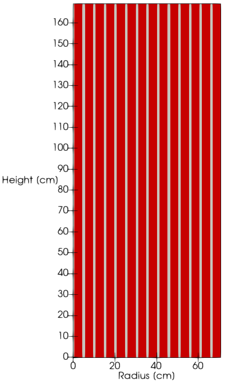

Eigenvalue Calculation with NtAction
The input files associated with this tutorial are moltres/tutorial/eigenvalue/nts.i and moltres/tutorial/eigenvalue/nts-action.i. Refer to Tutorial 2a for an introduction on the input file syntax and in-depth descriptions of every input parameter.
As mentioned in Tutorial 2a, this example involves a simple 2-D axisymmetric core model of the Molten Salt Reactor Experiment (MSRE) that was developed at Oak Ridge National Laboratory. The figure below shows the 2-D MSRE model for this tutorial. It is a 70.8 cm by 169 cm rectangle that is axisymmetric about the left boundary. The domain consists of 14 fuel channels, alternating with 14 solid graphite moderator regions, represented in the figure by gray and red rectangles, respectively.

Figure 1: 2-D axisymmetric model of the MSRE
For multiplication factor () eigenvalue calculations, Moltres relies on the Eigenvalue executioner from MOOSE. These executioners solve the neutron diffusion equations set up as an eigenvalue problem to find and the neutron flux distribution, which occur as the absolute minimum eigenvalue and the corresponding eigenvector of the system.
The MOOSE Action system allows us to streamline and simplify creating input files for Moltres simulations. You will have encountered the PrecursorAction object in Tutorial 2a for setting up input parameters for delayed neutron precursors. PrecursorAction automatically sets up the required Variables, Kernels, BCs, etc. governing precursor production, decay, and drift. Otherwise, users will need to fill in every input object for six or eight precursor groups, which would undoubtedly result in a very long input file prone to typos and user error. Similarly, we created NtAction for neutron group fluxes since many reactor simulations involve more than two neutron energy groups.
Both nts.i and nts-action.i set up the same eigenvalue problem for a 2-D axisymmetric MSRE model. The model parameters are as follows:
Two neutron energy groups
Six delayed neutron precursor groups
Vacuum boundary conditions along the top, bottom and outer boundaries of the axisymmetric cylinder
Uniform temperature of 900K
Uniform salt flow upwards along the fuel channels at 18.085cm/s
No salt looping (precursors that flow out of the core without decaying are considered lost)
Both input files produce the same neutron flux and precursor distributions. You may compare them to identify the objects that NtAction automatically initializes, and appreciate how much cleaner nts-action.i looks compared to nts.i.
Results and discussion to come at a later date.